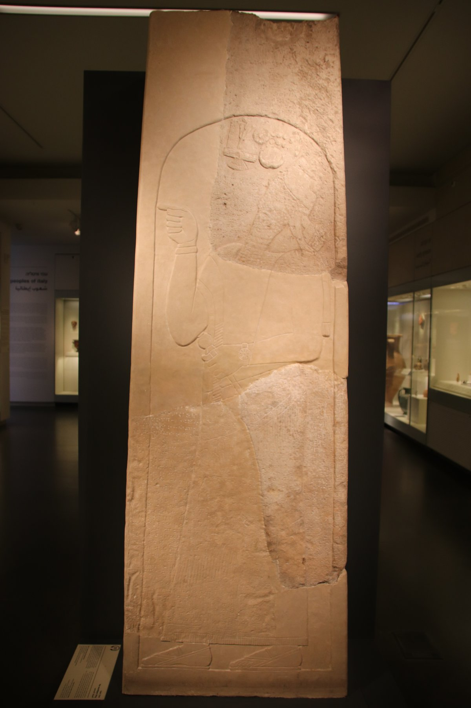

Iran Stele of Tiglath-Pileser III

- Find Name
- Iran Stele of Tiglath-Pileser III
- Description
- The Iran Stele is a dolomite stele, 240 cm tall, inscribed in Akkadian with an annalistic text of Tiglath-Pileser III (RINAP 1 no. 35). It survives in three large fragments and narrates the first nine years of the king's reign, closing with his Median campaign of 737 BC. Its exact findspot is unknown: the fragments came onto the antiquities market from western Iran, possibly Luristan or the Kermanshah region, and first came to scholarly attention through Louis Levine in 1967. Two fragments are now in the Israel Museum, Jerusalem, and the third is in a private collection.
- Historical Period
- Iron Age II
- Evidence Class
- Direct
- Interpretations
- The stele's tribute list names 'Menahem of Samaria, Hiram of Tyre' and Rezin of Damascus, matching the biblical account in which Menahem paid 1,000 talents of silver to Pul (2 Kings 15:19-20). The line 'the place of Samaria only did I leave their king' echoes the biblical picture of Samaria surviving, for a time, as a tributary. Caution: the stele's provenance is uncertain (antiquities market, not a controlled excavation), and it is the king's own propaganda; its value lies in the names and tribute relationships it confirms, not in its self-praise.
- Alternative Names
- Iran Stela; Stele of Tiglath-Pileser III
- Related Places
- Related Books
- Related Events
- Related People
- Scripture Illuminated
- Biblical Significance
- The stele independently confirms that Menahem of Samaria paid tribute to Tiglath-Pileser III, exactly as 2 Kings 15:19-20 records, and it names the same coalition of western kings (Rezin of Damascus, Hiram of Tyre) that appears in the biblical narrative of the 730s BC.
- Artifact Date
- c. 737 BCE
- Current Location
- Israel Museum, Jerusalem (two fragments); third fragment in a private collection
- Date Discovered
- Unknown; brought to scholarly attention 1967
- Discovery Location
- Western Iran (Zagros Mountains; exact findspot unknown)
- Timeline Era
- Divided Monarchy
Awaiting Review Not yet checked against scholarly sources. Treat its claims as provisional until this entry is reviewed. About verification
Last reviewed: not yet reviewed